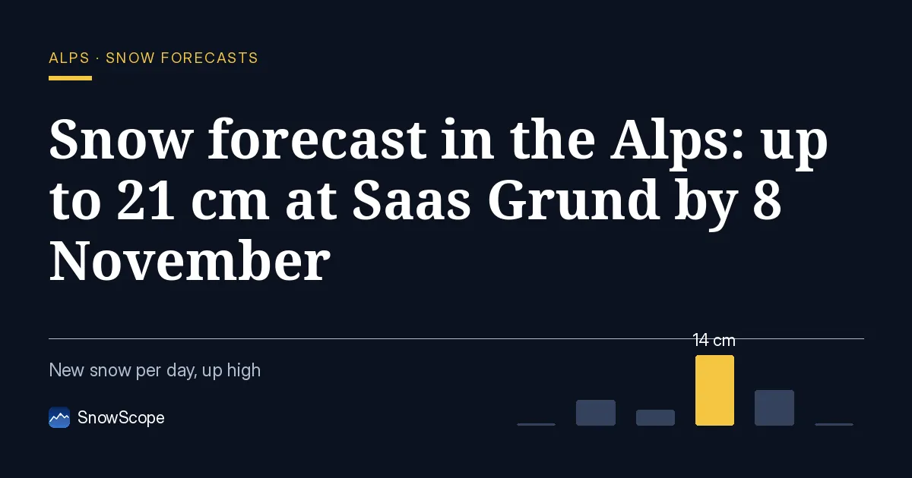
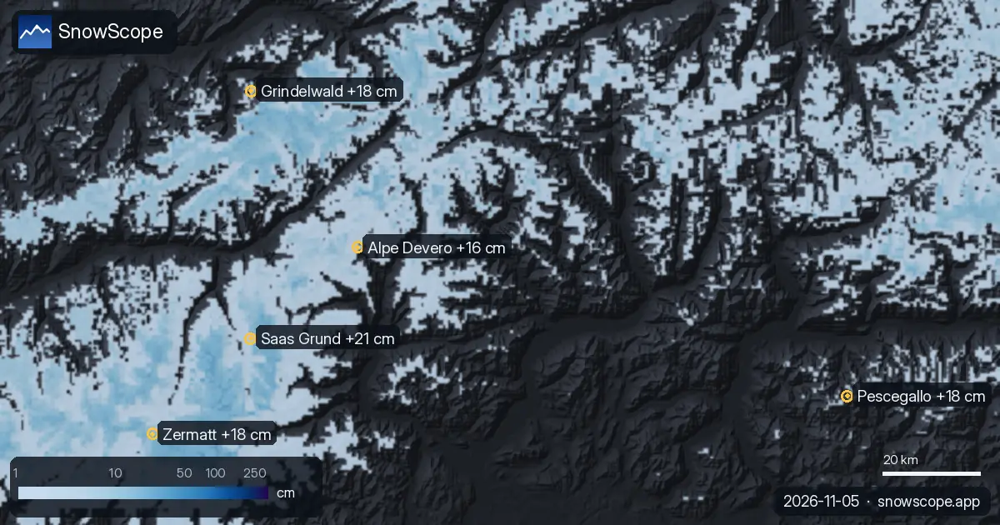
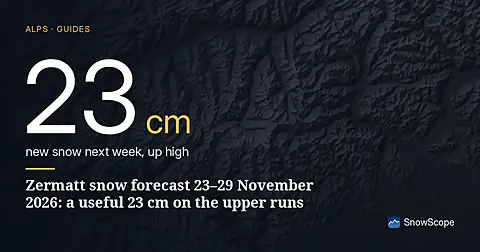
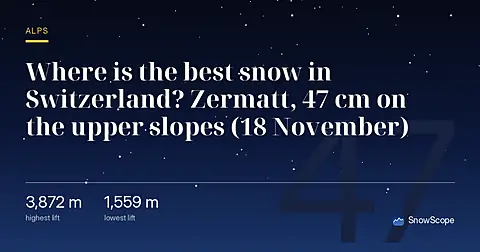

Snow forecast in the Alps: up to 21 cm at Saas Grund by 8 November
Across the Alps, the next three days bring fresh snow to higher elevations, with Saas Grund gaining up to 21 cm by 8 November. The heaviest falls arrive on Friday and Saturday, though the freezing level varies sharply between resorts—some will see rain at mid-mountain while others get powder at the top.
See the live snow forecast for Saas Grund in the SnowScope appSnow depth, powder alerts and the 3D map, free.
When the snow arrives
Friday 6 November is the strongest day: Saas Grund gets 14 cm, Grindelwald 14 cm, and Zermatt 14 cm. Saturday 7 November brings more: Saas Grund another 7 cm, Pescegallo 11 cm, and Alpe Devero 5 cm.
By Sunday 8 November the system moves away and snow stops across all five resorts. The timing matters for your travel plans: if you are heading up Friday or early Saturday, you will ski into the fresh fall.
| Resort | Snow depth | New snow, 72 h | Coming, next days | Top |
|---|---|---|---|---|
| Saas Grund | 27 cm | 8 cm | 21 cm | 3,142 m |
| Grindelwald | 20 cm | 0 cm | 18 cm | 2,394 m |
| Pescegallo | 1 cm | 3 cm | 18 cm | 1,984 m |
| Zermatt | 23 cm | 10 cm | 18 cm | 3,872 m |
| Alpe Devero | 19 cm | 4 cm | 16 cm | 2,201 m |

Height decides the snow type
At Saas Grund the freezing level on Friday reaches 2,350 m to 2,640 m, so the mid-mountain zone (2,347 m) sits right at the edge. The upper slopes above 2,700 m will get dry powder, but the middle runs may turn slushy by afternoon. The base at 1,553 m gets rain.
At Grindelwald, Friday's freezing level climbs to 1,810 m to 2,860 m—the full range of the resort. Upper runs at 2,394 m will stay snowy but the lower half risks rain or wet snow. Saturday it drops to 1,770 m to 2,180 m, so conditions improve on the upper slopes.
Pescegallo sits low at 1,984 m. On Friday the freezing level reaches 1,820 m to 2,790 m: the top gets snow but most of the resort faces rain or slush. Saturday it stays cold: 1,820 m to 1,930 m means the whole mountain turns snowy and powder lasts all day.

Snow depth across the region today
Saas Grund leads with 27 cm on its upper slopes. Zermatt holds 23 cm at the top, Alpe Devero 19 cm, and Grindelwald 20 cm. Pescegallo is thin at just 1 cm, so the new snow there will be welcome but make sure no rocks lie under the surface.
The snow-covered area in the Alps grew fast: from 35,390 km² two days ago to 46,450 km² now. After the forecast snow falls, SnowScope shows 31,930 km² by 8 November—a dip because lower elevations warm up and lose their thin early-season cover.
How this compares with past winters
At mid-mountain height (2,347 m) at Saas Grund, today's snow is 2 cm—that is deeper than it was in 11 of the past 46 Novembers on this date. This winter started with snow earlier than average.
Pescegallo is running thin. At its mid-height (1,719 m) SnowScope shows 0 cm today, which is deeper than it was in 21 past years but still a marginal base. Early season needs patience and care.
Where to ski each day
Friday: Head to Saas Grund, Zermatt or Alpe Devero, where new snow at higher elevations will be dry. Avoid lower slopes where the freezing level lets rain through.
Saturday: Pescegallo improves as the freezing level drops. Grindelwald's upper slopes also benefit from colder air. Saas Grund and Zermatt stay solid.
Sunday: Snow stops but powder persists on north-facing slopes at all resorts. By Monday the system clears away.
Tips for skiers
- On Friday, use the highest lifts at Grindelwald and Pescegallo to stay above the freezing level and avoid wet snow on lower runs.
- Saturday is Pescegallo's best day for powder—the freezing level stays below 1,930 m all day, so the whole mountain is wintry.
- Fresh snow lasts longest on shaded, north-facing slopes. South-facing runs soften by mid-morning in the sun.
- Before you venture off-piste, check the latest official avalanche bulletin for your region.
- Forecasts three days ahead can shift. Check the SnowScope map again on Thursday evening before you decide where to ski Friday.
About these numbers
Resort snow depths are the deepest snow on the resort's upper slopes on the date shown; they are estimates for an area, not a measurement at one point. Forecasts can change. Always read the official avalanche bulletin before going off-piste.
Official avalanche bulletins: EAWS (Alps)
Cite this report
For research, teaching or the press: the numbers and charts are free to reuse under CC BY 4.0 with this citation.
SnowScope (2026), Snow forecast in the Alps: up to 21 cm at Saas Grund by 8 November, https://snowscope.app/blog/en/2026/11/alps-snow-forecast-5-november-2026.html, accessed 2026-11-05
SnowScope (Atlas Labs). (2026, November 5). Snow forecast in the Alps: up to 21 cm at Saas Grund by 8 November. SnowScope snow reports. https://snowscope.app/blog/en/2026/11/alps-snow-forecast-5-november-2026.html
BibTeX
@misc{snowscope2026alpssnowforecast5novembe,
author = {{SnowScope (Atlas Labs)}},
title = {Snow forecast in the Alps: up to 21 cm at Saas Grund by 8 November},
year = {2026},
month = nov,
howpublished = {\url{https://snowscope.app/blog/en/2026/11/alps-snow-forecast-5-november-2026.html}},
note = {Published 2026-11-05 10:27 UTC; accessed 2026-11-05}
}· CC BY 4.0 · Methods, data and tools →
Saas Grund: snow and temperature by height, this winter vs last (tools) →
Follow Saas Grund
Free: a message when fresh snow is coming, and the forecast every morning.
More snow reports

Next week Cervinia receives 23 cm at the top (3400 m), with Thursday 26 November as the peak snowfall day. Forecast from 16 November 2026.

Zermatt gets 23 cm of snow next week at 3800 m, with Thursday 26 November the best day. Forecast from 16 November 2026.

Snow report for 18 November: Zermatt leads Swiss resorts with 47 cm on the upper slopes. Fresh snow arrives across the Alps.